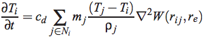
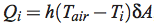
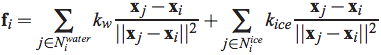
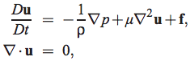

Ice Melting Implementation and Results
Gianni Chen Kanchalai Suveepattananont
Table of Contents
- Introduction
- Implementation
- Results
- References
I. Introduction
In this project, we implemented an ice melting simulation using Smoothed-Particle Hydrodynamics, a lagrangian method. We focused on the heat transfer and forces between particles to achieve a more physically accurate effect. Both of these need to be considered between ice to ice, ice to water, and water to water particles. The environment also contributes to heat. To visualize our results, we used marching cubes to create a polygon mesh and rendered the sequence in Autodesk Maya. This project was an outcome from the Physically Based Animation course at UPenn with Joseph Kider.
II. Implementation
We built our simulation using [IUDN10] as our main reference paper and Rama Hoetzlein's Fluid V2 as a code base.
Heat Transfer
[IUDN10] uses a general heat transfer equation and expands on it for special cases.

Ice to Ice Interaction
The ice to ice particle interactions are based on a voxel grid. The main purpose of this grid is to check for directly adjacent ice particles. Of the six adjacent cells for each ice particle, each face that has a neighbor will be affected by the by them for heat transfer.
Air to Ice Interaction
The voxel grid is also used to calculate the ambient temperature's impact on the ice particles. The surface area exposed to air is calculated for each particle and combined with the difference in temperature between that particle and the air to decide the change in temperature. The h term here is thermal conductivity.

Water to Ice Interaction
The main interaction between water and ice is the interfacial forces.

Also, water particles exert a force on the ice block which causes it to shift around the environment. The transfer of heat between water and ice particles are the same as water to water particles and use the same thermal conductivity constant for both ice and water.
Water to Water Interaction
The Navier-Stokes equations stand at the core of our water particle motions. Water to water particle interactions base their pressure and viscosity calculations on the original base code.

However, heat transfer occurs by checking the neighbor arrays, not in the voxel grid, of each particle and is governed by the first equation above.
Marching Cubes
We adopted part of the marching cube code from Terry Kaleas's senior project and made modifications to fit the ways our particles interacted. Marching cubes traverses over a volume and generates the surface by checking the cases a each point in the volume. We used this purely to output an object to render in Maya.
In summary, the above types of forces and heat transfers allow for an accurate simulation of melting ice. Most calculations are local to a single particle and its neighbors, but result in affecting the entire ice block. One thing we attempted to implement was torque, but because of the way we approached gravity on our ice models, we were unsuccessful with torque.
III. Results
IV. References
- [IUDN10] K. Iwasaki, H. Uchida, Y.Dobashi, T. Nishita, "Fast Particle-based Visual Simulation of Ice Melting," Computer Graphics Forum (PG 2010).
- [MCG03] M. Muller, D. Charypar, M. Gross, "Particle-Based Fluid Simulation for Interactive Applications," Eurographics/SIGGRAPH Symposium on Computer Animation (SIGGRAPH 2003).
- [PPLT06] A. Paiva, F Petronetto, T. Lewiner, G. Tavares, "Particle-based non-Newtonian fluid animation for melting objects," XIX Brazilian Symposium on Computer Graphics and Image Processing (SIBGRAPI 2006).
- R. Bridson, M. Fischer, "Fluid Simulation SIGGRAPH 2007 Course Notes," SIGGRAPH Course (SIGGRAPH 2007).